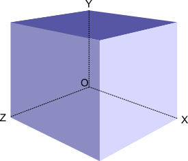

A. 加奇减偶
题目描述
给两个数 a，b ，可以对 a 进行如下的操作：a = a + x ，x 是任意的大于 $0$ 的 奇数， a = a - y , y 是任意的大于 $0$ 的 偶数 。可以执行任意次数以上的操作。
问从a变成b最少需要几次操作？
输入说明
第一行输入一个整数 $T$ ，代表测试样例数目。 $1 \le T \le 30000$
接下来 $T$ 行每一行输入两个整数 $a, b$ 。 $1 \le a, b \le 10^9$
输出说明
对于每一个样例的答案占一行，输出从 $a$ 变成 $b$ 的最小操作次数。
输入样例
1 | 5 |
输出样例
1 | 1 |
数据范围及提示
对于第一个样例，你只需要对 $a$ 加上 $1$。
对于第二个样例，你不需要任何操作。
对于第三次样例，你可以对 $a$ 加两次 $1$。
对于第四个样例，你可以先对 $a$ 加上 $1$ ，再对 $a$ 减去 $4$ 。
对于第五个样例，你可以直接减去 $6$ 。
解题思路
本题标签：数学；
本题首先对依据题意 $a$ 和 $b$ 的大小关系进行分类讨论，然后再对 $a$ 和 $b$ 的奇偶性，进行讨论。
不难发现：
- 当
a = b时，不需要执行操作。 - 当
a < b时，我们首先需要执行一次操作增加 $a$ 的值，如果 $a$ 和 $b$ 的奇偶性相同，则我们需要再执行一次操作。 - 当
a > b时，我们首先需要执行一次操作减少 $a$ 的值，如果 $a$ 和 $b$ 的奇偶性不同，则我们需要再执行一次操作。
AC 代码
1 |
|
B. 特殊数组
题目描述
定义数组中的某个数 $a_i$ 如果是特殊的，则满足：在数组中存在一个长度 大于等于 $2$ 的连续子序列，其和为 $a_i$ 。
给你一个长度为 $n$ 的数组，问有多少数是特殊的。
输入说明
第一行输入一个 $T$，代表测试样例个数， $1 \le T \le 1000$
接下来 $2T$ 行，第一行输入一个整数 $n$ ,代表数组中元素的个数
第二行输入 $n$ 个整数 $a_i$ ，代表数组中的元素。
其中，$1 \le n \le 8000$, $1 \le a_i \le 8000$
输出说明
对于每个测试样例，输出一个整数代表答案，每个样例答案占一行。
输入样例
1 | 5 |
输出样例
1 | 5 |
数据范围及提示
对于第一组数据，$4$ 有 ${3, 1}$ 的子序列，前一个 $5$ 有 ${1，4}$ ，$9$ 有 ${3,1,4,1}$ ，$6$ 有 ${1,5}$ ，后一个 $5$ 有 ${4,1}$ ，所以特殊的数有 $5$个。
第二组数据只有 $2$ 有 ${1, 1}$ 的子序列满足要求。
第三组数据没有能满足条件的子序列。
第四组有 $7，6，5，3$ 满足条件。
第五组没有满足条件的子序列。
解题思路
- 本题标签：数学；哈希表；
本题我们枚举长度大于等于 $2$ 的子序列并将其和添加到哈希表里，最后判断数组中在哈希表中出现的元素数量即可。
AC 代码
1 |
|
C. 盒子
题目描述
给一个长方体，可以由两个对角顶点坐标确定，一个顶点位于原点 $(0, 0, 0)$ ，另一个顶点在点 $(x_1, y_1, z_1)$ 处。盒子的六个面编号为 $a_1, a_2， \cdots, a_6$，每个面的正中央印有一个数字 $x$。

编号位于框上，如下所示：
数字 $a_1$ 写在 $ZOX$ 平面上的面上；
$a_2$ 写在与 $a_1$ 所在的平面平行的面上；
$a_3$ 写在 $XOY$ 平面上的面上；
$a_4$ 写在与 $a_3$ 所在的平面平行的面上；
$a_5$ 写在 $YOZ$ 平面上的面上；
$a_6$ 写在与 $a_5$ 所在的平面平行的面上；
此时，你在 $(x, y, z)$ 处看长方体。
请注意，长方体的所有面都不是透明的，你无法通过长方体看到数字且你能看得足够远，求出你能看清所看到的面上数字，求能看到的数字之和。
输入说明
第一行输入三个整数 $x, y, z$ ，且 $|x|, |y|, |z| \le 10^6$，表示视点位置；
第二行输入三个整数 $x_1, y_1, z_1, (1 \le x_1, y_1, z_1 \le 10^6)$，表示长方体另一顶点坐标；
第三行按编号 $a_1, a_2, a_3, a_4, a_5, a_6$ 顺序输入六个整数。
数据保证 $(x, y, z)$ 在长方体之外。
输出说明
输出一个整数，表示你能看到的所有面上的数字之和。
输入样例
1 | 输入样例 1 |
输出样例
1 | 输出样例 1 |
解题思路
- 本题标签： 数学；
本题我们对三个坐标 $x, y, z$ 进行分类讨论。
首先对于 $y$ 坐标， 我们可以发现
- 当 $y < 0$ 时， 可以看到数字 $a_1$ 。
- 当 $y > y_1$ 时， 可以看到数字 $a_2$ 。
- 当 $0 \le y \le y_1$ 时， 无法看到这以上两个数字。
对于 $z$ 坐标， 我们可以发现
- 当 $z < 0$ 时， 可以看到数字 $a_3$ 。
- 当 $z > z_1$ 时， 可以看到数字 $a_4$ 。
- 当 $0 \le z \le z_1$ 时， 无法看到这以上两个数字。
对于 $x$ 坐标， 我们可以发现
- 当 $x < 0$ 时， 可以看到数字 $a_5$ 。
- 当 $x > x_1$ 时， 可以看到数字 $a_6$ 。
- 当 $0 \le x \le x_1$ 时， 无法看到这以上两个数字。
在代码是实现上我们可以使用数组来处理，这样可以减少代码量，另外注意到我们读入的顺序是 $x, y, z$ 而上述处理的顺序是 $y, z, x$ 所以要先做一些处理。
AC 代码
1 |
|
D. 卡牌对战
题目描述
有 $2N$ 张牌，它们的点数分别为 $1$ 到 $2N$ 。小柯拿了其中的 $N$ 张，小鹏拿了剩下的 $N$ 张. 小柯和小鹏会进行 $N$ 轮游戏，在每轮游戏中，小柯和小鹏各出一张牌。出了的牌不能收回。每轮谁的牌点数大谁就赢; 已知小鹏每一轮会出什么牌，试求小柯最多能赢多少轮。
输入说明
第一行是一个整数 $N$,
第二行是这 $N$ 个整数，表示小鹏每轮的出牌。
$2 \le N \le 2 * 10^5$,
输出说明
小柯最多能赢几轮
输入样例
1 | 4 |
输出样例
1 | 3 |
数据范围及提示
小鹏手里的牌是 $1, 3, 4, 8$
小柯手里的牌为 $2, 5, 6, 7$
显然小柯可以选择用
2 v 1
5 v 3
6 v 4
7 v 8
这样就可以赢 $3$ 轮
解题思路
- 本题标签： 贪心； 排序； 双指针;
由于小柯可以任意选择出牌的顺序，所以小鹏的出牌顺序是没有意义的。
我么可以将两人的卡牌统计好之后排序，然后从大到小来处理对局。
对于小鹏出的一张牌，
如果当前小柯剩余的牌中最大的比它大，那么小柯可以赢下本局。
如果当前小柯剩余的牌种最大的比它小，那么小柯便会输掉本局。
在赢局中，我们理所当然地删去小柯手中最大的牌；在输局中我们可以认为小柯无法赢得对局，可以出当前手牌中最小的牌，从而不影响后续的最优解。（然而实际上我们不必在实现中真的去删去最小的那张牌。）
AC 代码
1 |
|
E. 甜品
题目描述
小怡开了一家蛋糕店，她有 $n$ 个顾客，每位顾客 $i$ 都有一个喜好的甜度值 $a[i](1 \le i \le n)$ 。甜度为 $k$ 的蛋糕，当且仅当 $|a[i] - k| \le p$ 时，顾客 $i$ 才能得到满足。给定 $n$ 个顾客喜好的甜度值，小怡想知道最多可以让多少顾客得到满足。
输入说明
第一行两个数 $n$ , $p(1 \le n,p \le 10^6)$，含义如题面描述。
接下来一行 $n$ 个整数，表示顾客喜好的甜度值 $a[i] (1 \le a[i] \le 10^6)$ 。
输出说明
输出一个数字，表示最多有多少顾客同时得到满足。
输入样例
1 | 6 2 |
输出样例
1 | 5 |
数据范围及提示
甜度调成 $3$ 或 $4$ ，都可以满足 $5$ 名顾客。
解题思路
- 本题标签：排序；二分查找；
首先我们对原公式进行变换：
- $|a[i] - k| \le q$
- $-q \le a[i] - k \le q$
- $k - q \le a[i] \le k + q$
此时我们可以发现我们只需要让处于 $[k - q, k + q]$ 中的数尽可能多即可。
那么我们可以首先将原数组进行排序，之后枚举数组元素 $a_i$ 统计数组中 $a_i$ 到$a_i + 2 * q$ 元素数量，取最大值即可。
我们可以使用二分查找来快速计算数组中处于 $[a_i, a_i + 2 * q]$ 内的元素数量。
AC 代码
1 |
|
F. 约数之和
题目描述
给 $N(1 \le N \le 30)$ 个正整数，好奇的小明想知道这 $N$ 个正整数的乘积，是否可以将其分解为 $2$ 个正整数 $a$ 和 $b$ 的乘积，并且 $a$ 的约数个数与 $b$ 的约数个数之差为 $1$ 个。
输入说明
第一行为一个整数 $n$ 。 第 $2∼n+1$ 行为给出的 $n$ 个正整数。 （输入数据保证存在唯一解）
输出说明
输出包含两行。 第一行输出 $a$ 和 $a$ 的约数个数。 第二行输出 $b$ 和 $b$ 的约数个数。 输出保证 $a$ 的约数个数大于 $b$ 的约数个数。
输入样例
1 | 2 |
输出样例
1 | 175 6 |
数据范围及提示
测试数据在 long long 范围内。
解题思路
- 本题标签：数学；质因数分解；深度优先搜索；
对于一个正整数 $N$ ，那么他的约数个数可以使用以下方式计算：
令 $N = p_1^{c_1} * p_2^{c_2} * \cdots * p_m^{c_m}$
其中 $c_i$ 都是正整数， $p_i$ 都是质数，且满足 $p_1 < p_2 < \cdots < p_m$
那么 $N$ 的余数个数为 $(c_1 + 1) * (c_2 + 1) * \cdots * (c_m + 1)$
对于本题，我们首先将读入数字做乘积， 然后再对其进行质因数分解。
对于质因数分解的结果，我们可以通过 深度优先搜索 将其分为 $a$ 和 $b$ 两个正整数，并分别计算其约数，判断合法性返回答案即可。
AC 代码
1 |
|
G. 蔬菜包
题目描述
小星是参加防疫的一名志愿者，每天都为在家中被隔离的居民们送蔬菜包。他把每层楼看成一个 $n * n$ 的矩阵。小星需要将蔬菜包送到位于 $m$ 层的居民手中，小星想请你帮他计算一下，他能否成功将蔬菜送达。如果能则需要的最少体力，如果不能则输出 $No$ 。
输入说明
第一行输入 $2$ 个整数 $m(1 \le m \le 30)$ 和 $n(1 \le n \le 30)$ 。表示给出 $m$ 层楼，每层楼大小为 $n * n$ 。
接下来 $m$ 个输入 $n * n$ 的矩阵表示第 $m$ 层楼的地图
每层楼至多 $2$ 个楼梯，第一层楼给出一个起点，以及至多 $2$ 个楼梯，最后一层楼给出 $1$ 个终点，中间每层楼的起点为上一层楼梯的位置，上楼不消耗体力。
小星可以消耗 $3$ 体力可以在一个方向上行动 $2$ 格并穿过第一格上的障碍物
可以消耗 $1$ 体力行动 $1$ 格或 $2$ 格，可以只走 $1$ 格，也可以走 $2$ 格（可以转弯）
‘#’ 表示障碍物
‘.’ 表示平地
‘S’ 表示起点
‘E’ 表示居民的位置
‘U’ 表示楼梯
输出说明
可以回到点内时输出一个整数表示送到目标居民家中所消耗的最小体力，无法送达则输出 $No$ 。
输入样例
1 | 输入样例1 |
输出样例
1 | 输出样例 1 |
数据范围及提示
样例3说明：因为样例中第三层 S 往可以通行方向（左侧或上侧）都有两个障碍物，穿过第一个后没有落脚点，所以无法穿过障碍物到达 E 。
解题思路
- 本题标签：最短路径；Dijkstra；记忆化搜索；
依据题意我们可以得知一共有 $12$ 种走法，对于直接向一个方向走两步的走法，根据前方有没有障碍物消耗的体力为 $3$ 或 $1$ ，也就是说对于本题，我们可以每层楼的每个点最多有 $12$ 条边指向其他点，且边的权重为 $1$ 或 $3$ 。那么对于单层楼的寻找楼梯或者终点的最短路径，可以考虑使用 $Dijkstra$ 算法来解决。
由于每层楼可能不止一个楼梯，那么我们可以递归地解决这个问题，实现时使用记忆化搜索，记录每层楼每个楼梯的搜索状态，避免重复搜索。
时间复杂度分析
对于每层楼：一共 $N * N$ 个点，每个点最多有 $12$ 条边，令每层楼边的数量为 $E = 12 * N^2$ 那么对于一层楼执行 $Dijkstra$ 的时间复杂度为 $O(ElogN)$ ，对 $M$ 层楼执行 $Dijkstra$ 算法，时间复杂度为 $O(MElogE)$
对于记忆化搜索，由于每层楼最多有两个楼梯，那么我们一共有 $2M$ 个状态。
故本题时间复杂度为 $O(MN^2logN)$ 。
AC 代码
1 |
|
H. 区间异或
题目描述
小可在五年级暑假开始学习编程，编程语言中有一种 “按位异或(xor)” 的运算引起了他的莫大兴趣。于是，他思考这样的一个问题：给一个长度为 $n$ 的整数序列 $A$ 和整数 $k$ ，如何计算出满足下列两个条件的整数对 $(l, r)$ 的数量。
1、$1 \le l \le r \le n$ ；
2、$A_l xor \ A_{l+1} \ xor \ \cdots \ xor \ A_r \ = \ k$ 。
小可可虽然提出了问题，但他自己不会解决，只好又要麻烦你解决啦。
说明：xor 就是按位异或（C 或 C++语言中“按位异或”运算符为 ^ ）
输入说明
输入有三行：
第一行一个正整数 $n$，表示整数序列 $A$ 的元素个数。
第二行有 $n$ 个整数，第 $i$ 个整数 $A_i$ 表示整数序列 $A$ 的第 $i$ 个元素的值。
第三行是一个正整数 $k$ ,
对于全部测试样例： $1 \le n \le 2 * 10^5$ ，$0 \le A_i \le 2^{20}$ 。
输出说明
输出一行，包括一个正整数，表示满足条件的整数对 (l, r) 的数量。
输入样例
1 | 4 |
输出样例
1 | 2 |
解题思路
- 本题标签：位运算；前缀和；哈希表；
对于异或运算具有以下性质：
若 $A \ xor \ B \ = ; C$ 则 $A \ = \ C \ xor \ B$
若 $A \ = \ B$ 则 $A \ xor B \ = \ 0$
对于本题，给定一个数组 $a_1, a_2, a_3, \cdots, a_n$ 若存在区间 $[l, r]$ 使得 $a_l \ xor \ a_{l + 1} \ xor \cdots \ xor \ a_r \ = \ k$ 那么必然有以下结论。
$a_1 \ xor \ a_2 \ xor \ \cdots \ xor \ a_{l - 1} \ xor \ a_l \ xor \ \cdots \ xor \ a_r \ xor \ k = a_1 \ xor \ a_2 \ xor \ \cdots \ xor \ a_{l - 1}$
故我们对原数组进行 前缀异或 ，然后枚举 $a_i$ , 若 $a_i \ xor \ k$ 在之前出现过 $num$ 次， 那么便有 $num$ 个 $l$ 和 当前 $i$ 是满足条件的一对。
最后我们再增加哈希表中前缀为 $a_i$ 的数量。
实现时要注意由于 $l \le r$ 也就是说二者可以相等，所以我们一开始在哈希表中要置前缀 $”0”$ 的计数为 $1$ 。
AC 代码
1 |
|
参赛心得
这次比赛的时候比赛的时候并没有 $AK$ ，但是剩下的两道题目在赛后却很快补掉了，“约数之和” 那题没敢直接动手写质因数分解加深搜，“蔬菜包”那题比赛的时候忘了加记忆化，导致一直 t 3个测试点。
比赛的时候，2，3个人去读一题，有时候反而效率会下降。
对于某些题目显得有些过于谨慎，因为各种原因而没能尽早动手去写。
由于平时训练基本都是个人赛，很少打团队赛，所以还是有很多地方要改进。
总而言之这次比赛还是很有学习意义的，还有一个月继续加油吧！